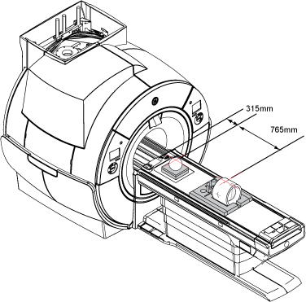
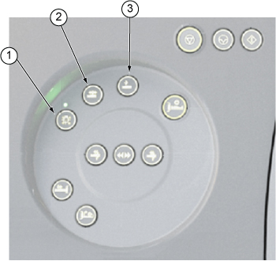
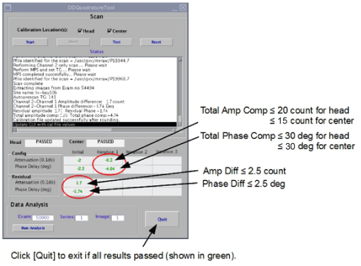
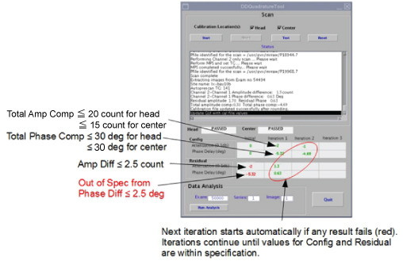

- 00000018WIA302B0E20GYZ
- id_131064154.5
- Jul 4, 2020 12:33:51 AM
Dual Drive Quadrature Tool
Personnel Requirements
Required Persons: 1
Preliminary Timing (mins): Not Applicable
Procedure Timing (mins): 45
Finalization Timing (mins): 5
Tools and Test Equipment
| Item | Qty | Part# | Manufacturer |
|
Body Loader with Sphere Phantom |
1 |
2371511 |
- |
|
Form Support for ECMT and Phantom |
1 |
5554839 |
- |
|
Head TLT Sphere Phantom |
1 |
2359877 |
- |
|
Foam Support for Head Sphere |
1 |
5554840 |
- |
Procedure
| Notice | |
|---|---|
Setting up for Both Head and Center Scan
-
At the scanner, remove any surface or head coil from the bore. Confirm that the cradle is at the home position.
-
Place Phantoms as following illustration.
Figure 1. Positioning Phantoms 
-
From the home position, move the cradle in so that the in-room monitor shows 315 mm. Turn on the alignment lights by pressing the Alignment button on the magnet enclosure.
Figure 2. Buttons on Magnet Enclosure 
Item Description 1 Alignment lights button 2 Landmark button 3 Advance to scan button -
Adjust the head phantom location where the laser light cross hairs line up on the center of the phantom. Press the Landmark button.
-
If scanning only the head location, press Advance to scan. Proceed to Accessing Dual Drive Quadrature Tool.
-
If scanning both head and center locations, move the cradle in an additional 765 mm.
Align the body loader and sphere on the center of the laser light cross hairs. Press Advance to scan, Proceed to Accessing Dual Drive Quadrature Tool.
-
| Notice | |
|---|---|
Accessing Dual Drive Quadrature Tool
(For non-proprietary mode) Select the Calibration tab, then Dual Drive Quadrature > Click here to start the tool.
(For proprietary mode) Run the Calibration Wizard, and select Dual Drive Quadrature.
Running Dual Drive Quadrature Tool
-
Select the calibration locations to include in the scan. Click Head or Center or both.
-
Click Start for the first iteration (see #id_SL5134485-1224516__SL5134564-1224516).
Scan and analysis begin. It takes about 6 minutes.
-
The tool runs up to three iterations, attempting to come to specification.
If you have selected both head and center scans, the tool automatically moves to the next location. It reruns iterations for the first location.
When the first iteration is complete, calibration results are passed or failed.
(For passed) Click Quit to complete the calibration. Proceed to Finalization.Figure 3. Pass Case 
(For failed) If the head location fails, the calibration scan stops. If you selected Head and Center locations to be performed together, you must manually start the center location calibration scan.Figure 4. Fail Case (at First Iteration) 
Table 2. Specifications for Dual Drive Quadrature Calibration Phase or Magnitude Value Head location phase 30 degrees Head location magnitude 20 counts (2.0 dB) Center location phase 30 degrees Center location magnitude 15 counts (1.5 dB) -
If the calibration passes within iteration 3, click Quit to exit the tool.
Finalization
Remove the phantoms, pads, and body loader from the cradle and return to the assigned storage locations.